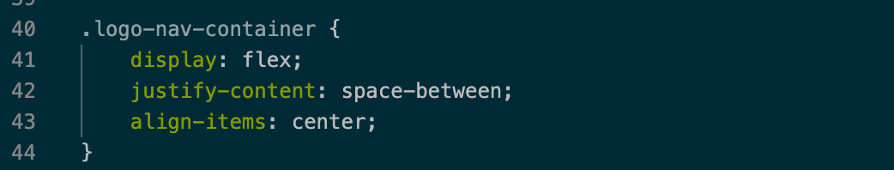

Clase 5
Diagramación CSS
Flexbox
Entrega a un contenedor la habilidad para alterar el ancho o alto, y espaciados de sus elementos para ajustarse lo mejor posible al espacio disponible. Uncontenedor flexible espande sus elementos para rellenar el espacio libre, o los comprime para evitar que rebasen el área prevista. Los contenedores flexibles funcionan en un eje, horizontal o vertical.
- Contendor flexible (Elemento con propiedad display: flex)
- Elementos flexibles (Descendientes directos de un contenedor flexible)
- Eje principal (Sobre el cual se suceden los elementos flexibles)
- Eje transversal (Perpendicular al eje principal)
- Líneas (Los elementos flexibles pueden quedar contenidos en una línea o utilizar varias según su ancho.
Multiples lineas
Por defecto, los elementos flexibles de un contenedor flex se ajustan al ancho disponible, uno al lado del otro en la misma línea. Esto puede ser modificado a través de la propiedad flex-wrap, permitiendo que estos rompan la línea y se ubiquen en una nueva línea según el ancho de los elementos.
Distribución
- justify-content - Alineación de elementos en el eje principal (flex-start/flex-end/center/ space-between/space-around/space-evenly)
- align-content - Distribución de espacios restantes en el eje secundario (flex-start/ flex-end/center/stretch/baseline)
- align-items - Alineación de elementos en el eje secundario (flex-start/flex-end/center/stretch/baseline)
- align-self - Alineación del propio elemento en el eje secundario - se aplica en un elemento flexible (no en el contenedor)
Dimensiones
Flexbox permite definir reglas de dimensiones para los elementos orientadas a adoptar los tamaños para distintas resoluciones.
Grid CSS
Permite pensar en un sistema de diagramación en 2 dimensiones.
Dimensiones Características de CSS Grid
- Diagramación en 2 dimensiones
- Permite definir una estructura de diagramación independiente del orden en que se encuentra el contenido
- En combinación con "@media-queries", permite estructuras flexibles dependientes de las características del cliente (escritorio/móvil)
- Permite solapar áreas
- Contenedor de grilla: elemto exterior, padre directo de los elementos de grilla.
- Elementos de grilla: descendientes directos del contenedor de grilla.